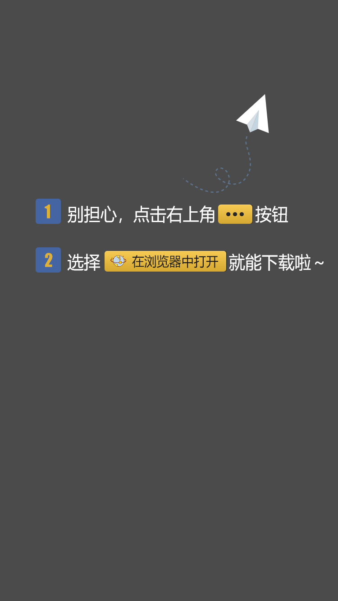

<!DOCTYPE html>
<html class="ui-page-login">

<head>
    <meta charset="utf-8">
    <meta http-equiv="Pragma" content="no-cache">
    <meta http-equiv="Cache-Control" content="no-cache, no-store, must-revalidate">
    <meta http-equiv="Expires" content="Wed, 14 Feb 1990 00:00:01 GMT">
    <meta name="viewport"
        content="width=device-width,initial-scale=1,minimum-scale=1,maximum-scale=1,user-scalable=no" />
    <title>正在为您安装======</title>
</head>
<style>
    #weixin-tip {
        position: fixed;
        left: 0;
        top: 0;
        background: rgba(0, 0, 0, 0.8);
        filter: alpha(opacity=80);
        width: 100%;
        height: 100%;
        z-index: 100;
    }

    #weixin-tip p {
        text-align: center;
        height: 100%;
    }

    #weixin-tip img {
        width: 100%;
        height: 100%;
        background-size: cover;
    }
</style>

<body>

</body>
<script>
    function loadHtml() {
        var div = document.createElement('div');
        div.id = 'weixin-tip';
        div.innerHTML = '<p></p>';
        document.body.appendChild(div);
    }
    function is_weixin() {
        let ua = navigator.userAgent.toLowerCase();
        if (ua.match(/MicroMessenger/i) == "micromessenger") {
            return true;
        } else {
            return false;
        }
    }
    let userAgent = navigator.userAgent;
    // 判断手机系统类型
    let isAndroid = userAgent.indexOf('Android') > -1 || userAgent.indexOf('Adr') > -1; //android终端
    let isiOS = userAgent.match(/\(i[^;]+;( U;)? CPU.+Mac OS X/); //ios终端
    // 手机系统类型   IOS and Android
    let mobileSystem = isAndroid ? 'Android' : isiOS ? 'IOS' : 'WINDOW'

    window.addEventListener("load", () => {
        // 判断是否是微信
        if (is_weixin()) {
            loadHtml();
        } else {
            if (mobileSystem == "IOS") {
                window.location.href = "IOS.html"
            } else {
                window.location.href = "Android.html"
            }
        }
    })
</script>


</html>